ضغط الدم

مرض ضغط الدم (ارتفاع ضغط الدم) هو حالة شائعة يمكن أن تؤدي إلى مشاكل صحية خطيرة إذا لم يتم التحكم فيها. إليك نظرة
عامة
على الأعراض والأسباب وطرق العلاج:
*أعراض ارتفاع ضغط الدم:*
-
1. غالبًا لا تظهر أعراض واضحة: يُطلق على ارتفاع ضغط الدم "القاتل الصامت" لأنه قد لا يسبب أعراضًا ملحوظة
لسنوات.
-
2. في حالات ارتفاع ضغط الدم الشديد:
-
- صداع شديد.
-
- دوخة أو تشوش الرؤية.
-
- ألم في الصدر.
-
- صعوبة في التنفس.
-
- نزيف الأنف.
-
- خفقان القلب.
أسباب ارتفاع ضغط الدم:
1. الأسباب الأولية (الأساسية):
-
:لا يوجد سبب محدد في معظم الحالات قد يكون مرتبطًا بعوامل مثل
-
التقدم في العمر.
-
الوراثة.
-
السمنة.
-
قلة النشاط البدني.
-
التدخين.
-
الإفراط في تناول الملح.
-
الإجهاد المزمن.
2. الأسباب الثانوية:
-
أمراض الكلى.
-
اضطرابات الغدة الدرقية.
-
توقف التنفس أثناء النوم.
-
تناول بعض الأدوية (مثل حبوب منع الحمل أو مسكنات الألم).
-
تعاطي الكحول أو المخدرات.
طرق علاج ارتفاع ضغط الدم:
1. تغييرات في نمط الحياة:
-
تقليل تناول الملح: الحد من الأطعمة المالحة والمصنعة.
-
اتباع نظام غذائي صحي: مثل حمية DASH الغنية بالفواكه والخضروات والحبوب الكاملة.
-
ممارسة الرياضة بانتظام: مثل المشي أو السبب لمدة 30 دقيقة يوميًا.
-
فقدان الوزن: إذا كنت تعاني من السمنة.
-
الإقلاع عن التدخين: لتقليل خطر أمراض القلب.
-
تقليل التوتر: عبر تقنيات الاسترخاء مثل اليوجا أو التأمل.
2. الأدوية:
-
مدرات البول: تساعد على التخلص من الصوديوم والماء الزائد.
-
حاصرات بيتا: تقلل من عبء العمل على القلب.
-
مثبطات الإنزيم المحول للأنجيوتنسين (ACE): تساعد على استرخاء الأوعية الدموية.
-
حاصرات قنوات الكالسيوم: تمنع الكالسيوم من دخول خلايا القلب والأوعية الدموية.
-
أدوية أخرى: حسب توصيات الطبيب.
3. المراقبة المنتظمة:
-
قياس ضغط الدم بانتظام في المنزل أو عند الطبيب.
-
المتابعة مع الطبيب لتعديل العلاج إذا لزم الأمر.
4. العلاجات الطبيعية (باستشارة الطبيب):
تناول الأطعمة الغنية بالبوتاسيوم (مثل الموز).
شرب الشاي الأخضر.
استخدام الأعشاب مثل الكركديه (باعتدال).
هناك العديد من الأدوية التي تُستخدم لعلاج ارتفاع ضغط الدم، ويعتمد اختيار الدواء المناسب على حالة المريض الصحية،
والأعراض
الجانبية المحتملة، والأمراض الأخرى التي يعاني منها. إليك بعض الفئات الرئيسية للأدوية المستخدمة لعلاج ضغط الدم:
1. مدرات البول (Diuretics):
:مثال
-
هيدروكلوروثيازيد (Hydrochlorothiazide)،
(esidrex,hydrodiuril):الاسم التجاري
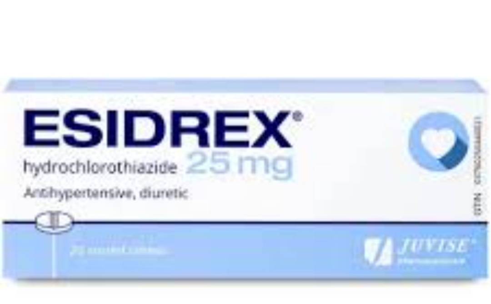
- فوروسيميد (Furosemide).
(lasix):الاسم التجاري
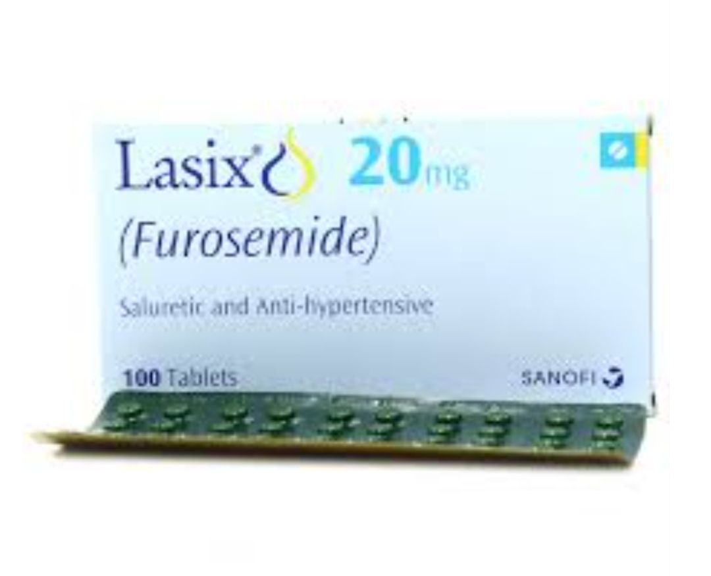
-
كيف تعمل: تساعد الكلى على التخلص من الصوديوم والماء الزائد، مما يقلل حجم الدم ويخفض الضغط.
-
الاستخدام: غالبًا ما تكون الخط الأول لعلاج ضغط الدم.
[mayo clinic]:المصدر
2. حاصرات بيتا (Beta Blockers):
:مثال
-
ميتوبرولول (Metoprolol)
(lopressor,toprol XL):الاسم التجاري
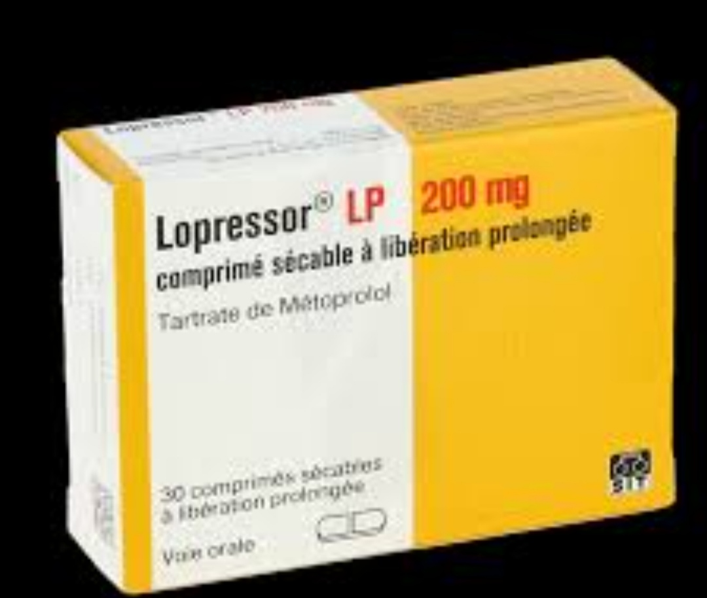
-
أتينولول (Atenolol)
(tenormin):الاسم التجاري
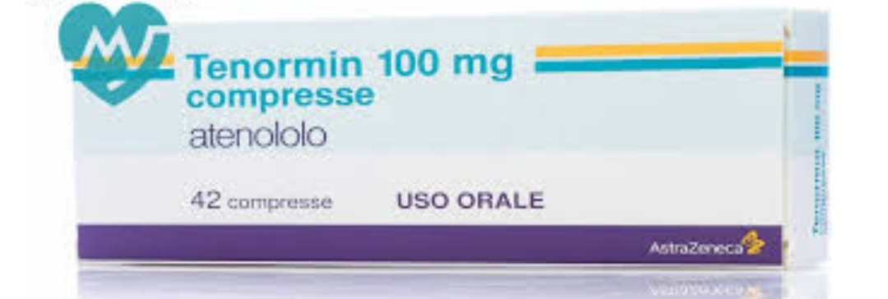
-
بروبرانولول (Propranolol).
(inderal):الاسم التجاري
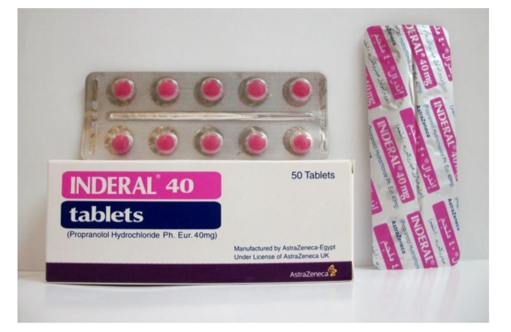
-
كيف تعمل: تقلل من معدل ضربات القلب وقوة الانقباض، مما يقلل الضغط على الأوعية الدموية.
-
الاستخدام: مفيدة للمرضى الذين يعانون من أمراض القلب أو بعد النوبات القلبية.
[American Heart Association]:المصدر
3. مثبطات الإنزيم المحول للأنجيوتنسين (ACE Inhibitors):
:مثال
-
ليسينوبريل(Lisinopril)
(zestril,prinivil):الاسم التجاري
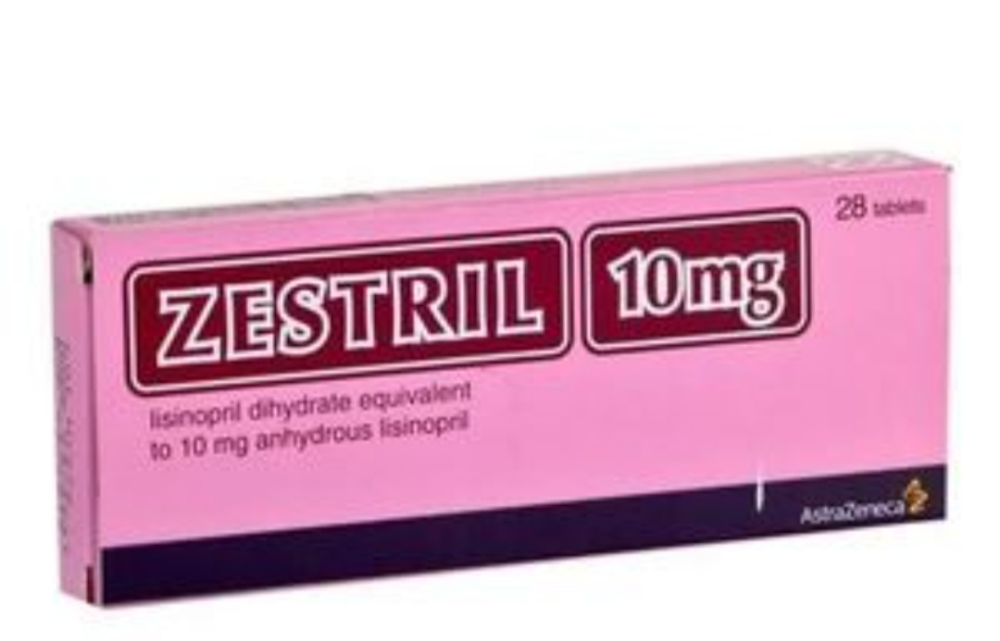
-
إنالابريل (Enalapril)
(vasotec):الاسم التجاري

-
راميبريل (Ramipril).
(altace):الاسم التجاري
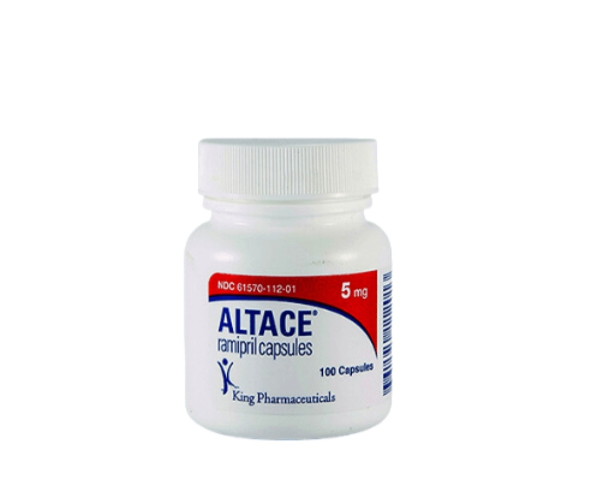
-
- كيف تعمل: تمنع تكوين مادة الأنجيوتنسين II التي تسبب تضيق الأوعية الدموية، مما يساعد على استرخائها.
-
- الاستخدام: مفيدة لمرضى السكري أو أمراض الكلى.
[WebMD]:المصدر
4. حاصرات مستقبلات الأنجيوتنسين II (ARBs):
:مثال
-
لوسارتان (Losartan)
(cozaar):الاسم التجاري

-
فالسارتان (Valsartan)
(diovan):الاسم التجاري
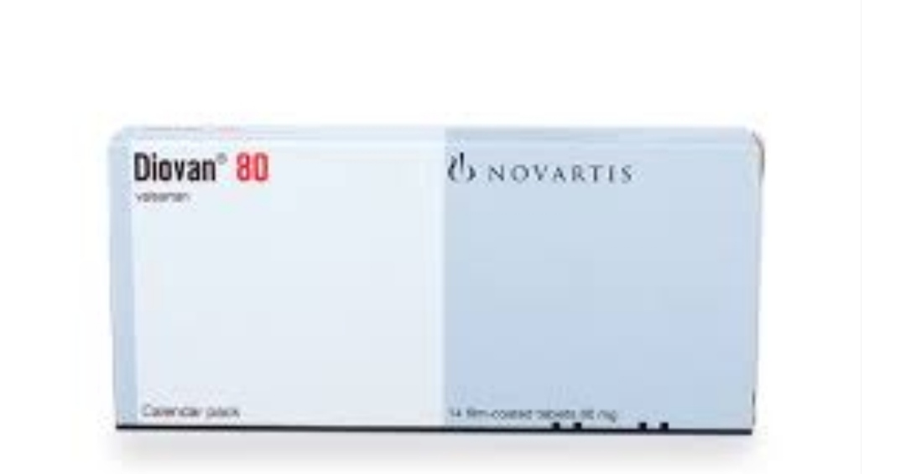
-
إيربيسارتان (Irbesartan).
(avapro):الاسم التجاري
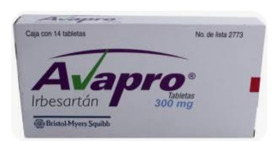
-
كيف تعمل: تمنع تأثير الأنجيوتنسين II على الأوعية الدموية، مما يساعد على استرخائها.
-
الاستخدام: بديل لمثبطات ACE إذا كانت تسبب أعراضًا جانبية مثل السعال.
[medlineplus]:المصدر
5. حاصرات قنوات الكالسيوم (Calcium Channel Blockers):
:مثال
-
أملوديبين (Amlodipine)
(norvasc):الاسم التجاري

-
ديلتيازيم (Diltiazem)
(cardizem,tiazac):الاسم التجاري
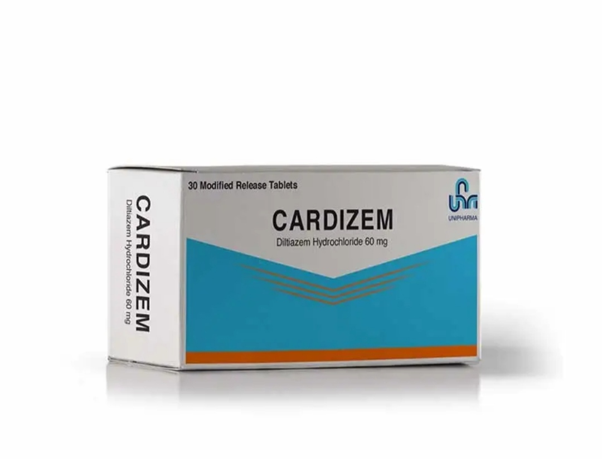
-
فيراباميل (Verapamil).
(calan,isoptin):الاسم التجاري
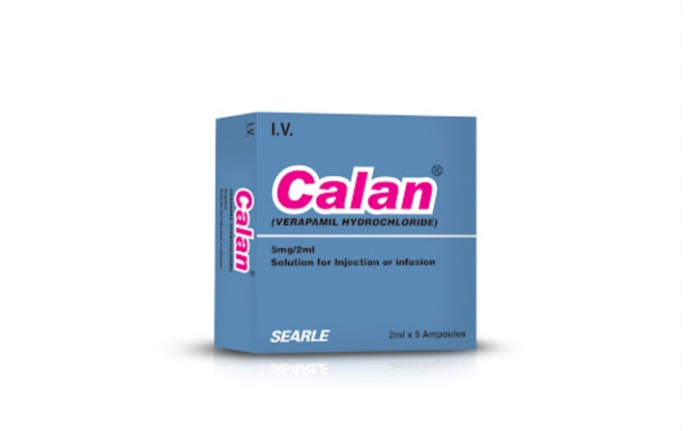
-
كيف تعمل: تمنع الكالسيوم من دخول خلايا القلب والأوعية الدموية، مما يقلل من انقباضها ويوسع الأوعية.
-
الاستخدام: مفيدة لكبار السن أو المرضى الذين يعانون من الذبحة الصدرية.
[drugs.com]:المصدر
6. مثبطات الرينين (Renin Inhibitors):
:مثال
-
أليسكيرين (Aliskiren).
(tekturna):الاسم التجاري
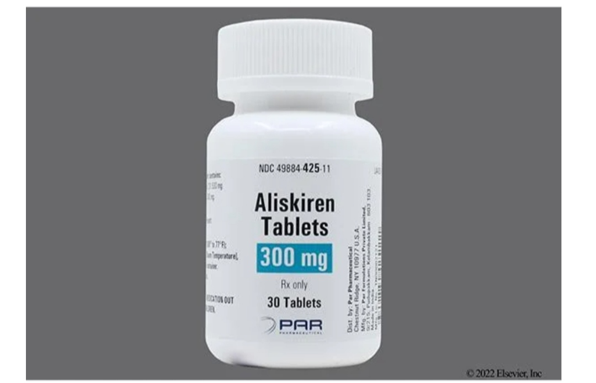
-
كيف تعمل: تمنع إفراز إنزيم الرينين الذي يلعب دورًا في تنظيم ضغط الدم.
-
الاستخدام: تستخدم في حالات محددة.
[national institutes of health]:المصدر
7. حاصرات ألفا (Alpha Blockers):
:مثال
-
دوكسازوسين (Doxazosin)
(cardura):الاسم التجاري
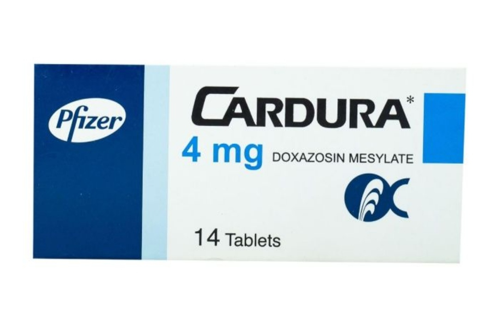
-
برازوسين (Prazosin).
(minipress):الاسم التجاري
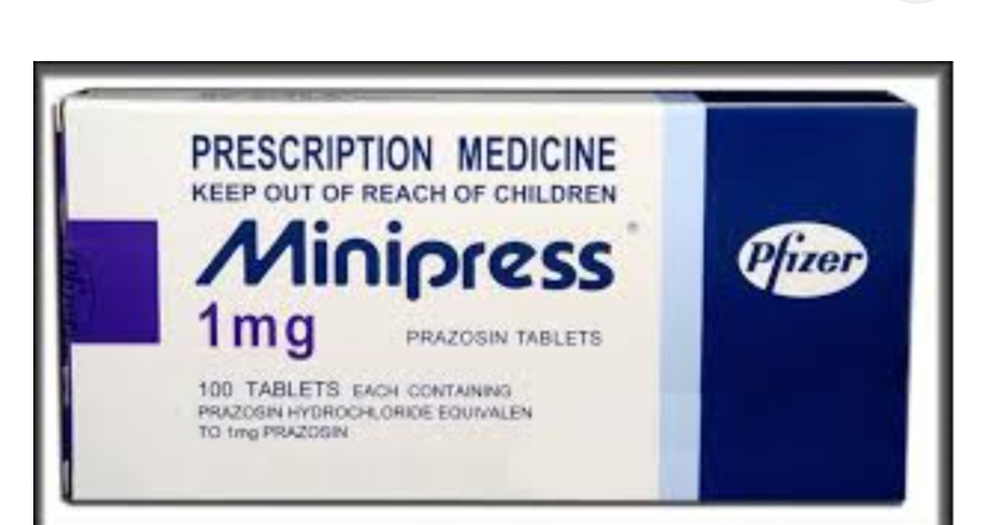
-
كيف تعمل: تقلل من مقاومة الأوعية الدموية عن طريق منع تأثير النورأدرينالين.
-
الاستخدام: تستخدم أحيانًا مع أدوية أخرى.
[mayo clinic]:المصدر
8. موسعات الأوعية الدموية (Vasodilators):
:مثال
-
هيدرالازين (Hydralazine)
(apresoline):الاسم التجاري
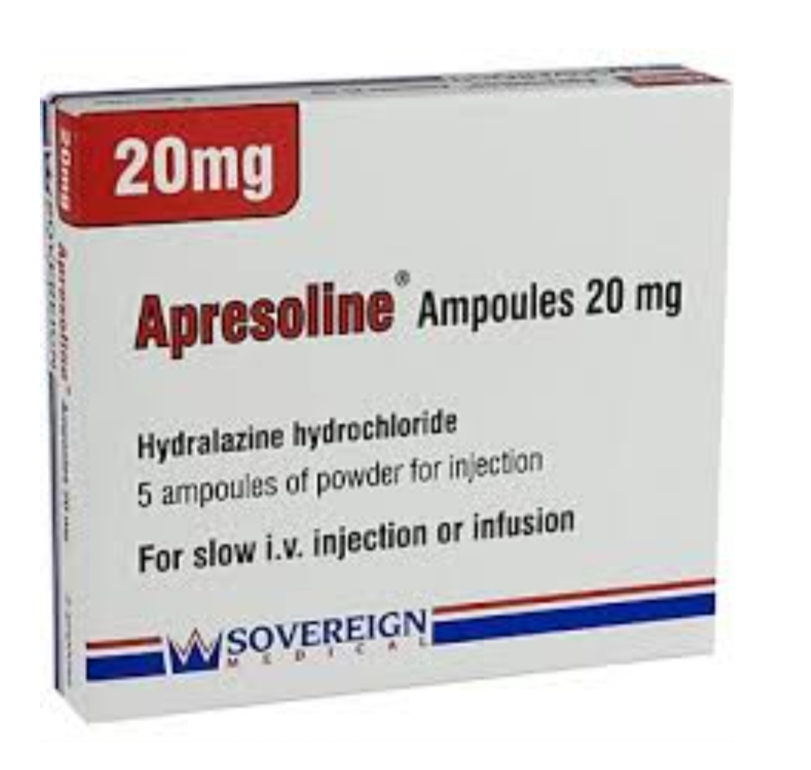
-
كيف تعمل: تعمل على استرخاء العضلات في جدران الأوعية الدموية، مما يوسعها ويخفض الضغط.
-
الاستخدام: تستخدم في حالات محددة أو عند فشل الأدوية الأخرى.
[mayo clinic]:المصدر
9. مدرات البول الحافظة للبوتاسيوم (Potassium-Sparing Diuretics):
:مثال
-
سبيرونولاكتون (Spironolactone)
(aldactone):الاسم التجاري
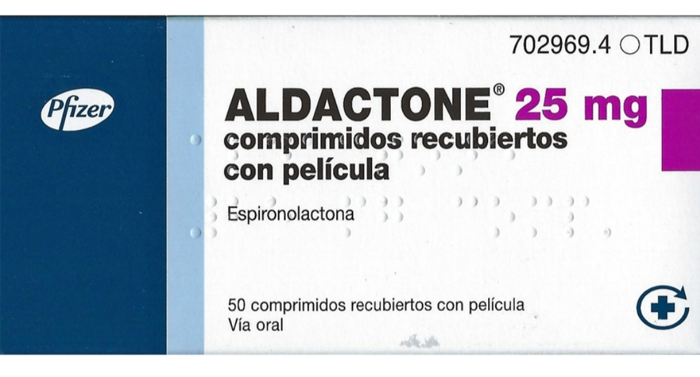
-
كيف تعمل: تساعد على التخلص من الصوديوم دون فقدان البوتاسيوم.
-
الاستخدام: مفيدة في حالات معينة مثل قصور القلب.
[mayo clinic]:المصدر
10. أدوية مركبة (Combination Drugs):
:مثال
-
مثبطات مع مدرات البولACE(مثل ليسينوبريل + هيدروكلوروثيازيد).
-
الاستخدام: لتحسين الفعالية وتقليل عدد الأدوية التي يتناولها المريض.
ملاحظات مهمة:
1. يجب تناول الأدوية تحت إشراف طبي دقيق.
2.قد يحتاج المريض إلى تجربة أكثر من دواء أو جرعة للوصول إلى التحكم المطلوب.
3. الأدوية قد تسبب أعراضًا جانبية مثل الدوخة، التعب، أو اضطرابات في الكلى، لذا يجب مراقبة الحالة الصحية
بانتظام
إذا كنت تعاني من ارتفاع ضغط الدم، استشر طبيبك لتحديد الدواء المناسب لك بناءً على حالتك الصحية العامة.
اتباع نظام غذائي صحي هو أحد العوامل الرئيسية للتحكم في ضغط الدم. هناك العديد من الأطعمة التي يمكن أن تساعد
في خفض ضغط
الدم أو الحفاظ عليه ضمن المعدلات الطبيعية. إليك قائمة بالأطعمة المفيدة لمرضى ضغط الدم
1. الخضروات الورقية الخضراء:
-
- مثال: السبانخ، الكرنب، الخس، الجرجير.
-
- الفائدة: غنية بالبوتاسيوم الذي يساعد الجسم على التخلص من الصوديوم الزائد ويقلل الضغط على الأوعية
الدموية.
2. التوت:
-
- مثال: التوت الأزرق، الفراولة، التوت الأسود.
-
- الفائدة: يحتوي على مركبات الفلافونويد التي قد تساعد في منع ارتفاع ضغط الدم.
3. الشمندر (البنجر):
-
- الفائدة: غني بأكسيد النيتريك الذي يساعد على توسيع الأوعية الدموية وخفض ضغط الدم.
4. الحليب قليل الدسم والزبادي:
-
- الفائدة: غني بالكالسيوم الذي يساعد في تنظيم ضغط الدم.
5. الشوفان:
-
- الفائدة: يحتوي على الألياف القابلة للذوبان التي تساعد في تقليل ضغط الدم.
6. الموز:
-
- الفائدة: غني بالبوتاسيوم الذي يساعد في موازنة تأثير الصوديوم في الجسم.
7. الأسماك الدهنية:
-
- مثال: السلمون، الماكريل، السردين.
-
- الفائدة: غنية بأحماض أوميغا 3 الدهنية التي تساعد في تقليل الالتهاب وخفض ضغط الدم.
8. الثوم:
-
- الفائدة: يحتوي على مركبات الكبريت التي تساعد على استرخاء الأوعية الدموية.
9. البذور:
-
- مثال: بذور الكتان، بذور الشيا، بذور اليقطين.
-
- الفائدة: غنية بالمغنيسيوم والألياف التي تساعد في التحكم في ضغط الدم.
10. الفواكه الحمضية:
-
- مثال: البرتقال، الليمون، الجريب فروت.
-
- الفائدة: غنية بفيتامين C ومضادات الأكسدة التي تدعم صحة الأوعية الدموية.
11. الفاصوليا والبقوليات:
-
- مثال: العدس، الحمص، الفول.
-
- الفائدة: غنية بالألياف والمغنيسيوم والبوتاسيوم التي تساعد في خفض ضغط الدم.
12. الرمان:
-
- الفائدة: يحتوي على مضادات الأكسدة التي قد تساعد في خفض ضغط الدم.
13. الفستق:
-
- الفائدة: غني بالدهون الصحية والبوتاسيوم التي تساعد في تقليل ضغط الدم.
14. الكيوي:
-
- الفائدة: غني بفيتامين C ومضادات الأكسدة التي تدعم صحة القلب.
15. الزبادي اليوناني:
-
- الفائدة: غني بالبروتين والكالسيوم الذي يساعد في تنظيم ضغط الدم.
نصائح غذائية إضافية:
-
- تقليل الصوديوم: تجنب الأطعمة المالحة والمصنعة.
-
- زيادة البوتاسيوم: تناول الأطعمة الغنية بالبوتاسيوم مثل الموز، الأفوكادو، والبطاطا الحلوة.
-
- تقليل الدهون المشبعة: استبدلها بالدهون الصحية مثل زيت الزيتون.
-
- شرب الماء: الحفاظ على ترطيب الجسم.
-
- تجنب الكحول: يمكن أن يرفع ضغط الدم.
الغذائي DASH نظام
-
- ما هو: نظام غذائي مصمم خصيصًا لخفض ضغط الدم.
-
- المكونات الرئيسية:
-
- الفواكه والخضروات.
-
- الحبوب الكاملة.
-
- البروتينات قليلة الدهون (مثلا الأسماك والدواجن).
-
- منتجات الألبان قليلة الدسم.
-
- المكسرات والبذور.
باتباع هذه النصائح الغذائية، يمكنك المساعدة في التحكم في ضغط الدم بشكل طبيعي ودعم صحة القلب والأوعية
الدموية. ومع ذلك،
يجب استشارة الطبيب أو أخصائي التغذية لوضع خطة غذائية مناسبة لحالتك الصحية.
نصائح عامة:
-
- تجنب الإفراط في الكافيين.
-
- النوم الجيد (7-8 ساعات يوميًا).
-
- الحد من تناول الكحول.
إذا كنت تعاني من ارتفاع ضغط الدم، يُنصح بمراجعة الطبيب لتقييم حالتك ووضع خطة علاج مناسبة.